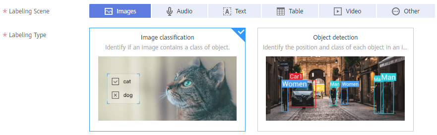
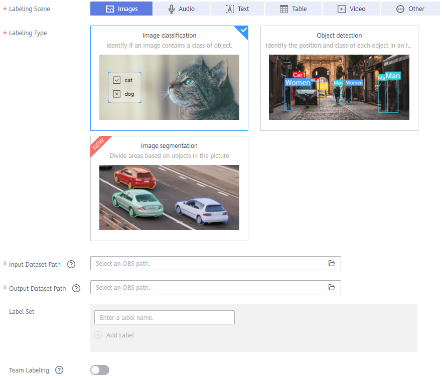

To manage data using ModelArts, create a dataset. Then you can perform operations on the dataset, such as labeling data, importing data, and publishing the dataset.
Prerequisites
- Before using the data management function, you need permissions to access OBS. This function cannot be used if you are not authorized to access OBS. Before using the data management function, go to the Settings page and complete access authorization using an agency.
- You have created OBS buckets and folders for storing data. In addition, the OBS buckets and ModelArts are in the same region.
- You have uploaded data to be used to OBS.
Procedure
- Log in to the ModelArts management console. In the left navigation pane, choose Data Management > Datasets. The Datasets page is displayed.
- Click Create Dataset. On the Create Dataset page, create datasets of different types based on the data type and data labeling requirements.
- Set the basic information, the name and description of the dataset.Figure 1 Basic information about a dataset

- Select a labeling scene and type as required. For details about the types supported by ModelArts, see Dataset Types.Figure 2 Selecting a labeling scene and type
 - Set the parameters based on the dataset type. For details, see the parameters of the following dataset types:
- Click Create in the lower right corner of the page.
After the dataset is created, the dataset management page is displayed. You can perform the following operations on the dataset: label data, publish dataset versions, manage dataset versions, modify the dataset, import data, and delete the dataset. For details about the operations supported by different types of datasets, see .
- Set the basic information, the name and description of the dataset.
Images (Image Classification, Object Detection, and Image Segmentation)

Parameter |
Description |
|---|---|
Input Dataset Path |
Select the OBS path to the input dataset. |
Output Dataset Path |
Select the OBS path to the output dataset. NOTE:
The output dataset path cannot be the same as the input dataset path or cannot be the subdirectory of the input dataset path. Select an empty directory as the Output Dataset Path. |
Label Set |
|